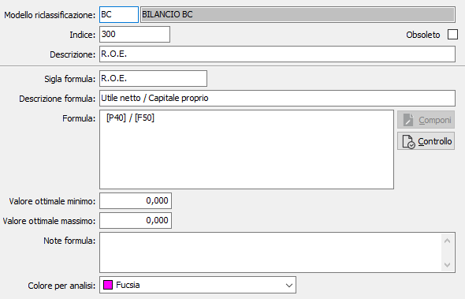
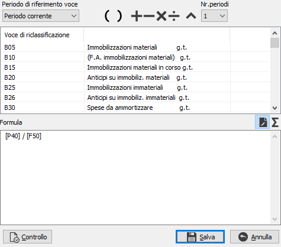
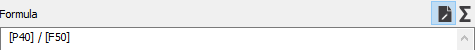
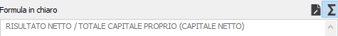

Manutenzione indici di bilancio
La procedura consente di manutenere le formule relative al calcolo degli indici di bilancio. Sono attivi i bottoni Stampa ed Anteprima sulla toolbar per effettuare la stampa (sintetica o analitica) degli indici memorizzati.

MODELLO: indica il modello di riclassificazione a cui appartiene l'indice. Sul campo sono attive le funzioni di ricerca (F9) sulla tabella stessa.
INDICE: codice alfanumerico di 8 caratteri per identificare l'indice di bilancio. Sul campo sono attive le funzioni di ricerca (F9) sulla tabella stessa.
DESCRIZIONE: è la descrizione della formula utilizzata nelle finestre di zoom e nei programmi di stampa.
SIGLA FORMULA: è la descrizione sintetica della formula che sarà riportata nelle finestre di zoom;
DESCRIZIONE FORMULA: ulteriore campo descrittivo della formula.
FORMULA: testo della formula; deve contenere i codici delle voci tra parentesi quadre ([A01]), possono essere utilizzate le parentesi tonde ed i vari operatori numerici ( +, -, /, *, ^ ). Il pulsante Controllo verifica la correttezza della sintassi della formula e la validità dei caratteri e dei codici utilizzati per comporla.
VALORE OTTIMALE MINIMO: rappresenta il valore ottimale minimo che dovrebbe assumere l'indice calcolato.
VALORE OTTIMALE MASSIMO: rappresenta il valore ottimale massimo che dovrebbe assumere l'indice calcolato.
NOTE FORMULA: campo memo per ulteriori annotazioni sulla formula.
COLORE PER ANALISI: indica il colore che, nell'analisi flussi, sarà utilizzato per indicare l'indice nella rappresentazione grafica.
La pressione sul pulsante Componi accede alla finestra di composizione dove è possibile comporre e controllare in modo semplificato la formula tramite i tasti simbolo ed il trascinamento dei codici delle voci.

Il pulsante Controllo verifica la correttezza della sintassi della formula e la validità dei caratteri e dei codici utilizzati per comporla. I bottoni sopra il riquadro della formula consento di alternare la visualizzazione da formula a formula in chiaro.

(esempio di una formula)

(esempio della stessa formula in chiaro)